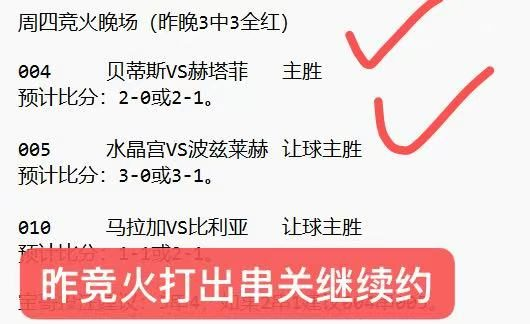
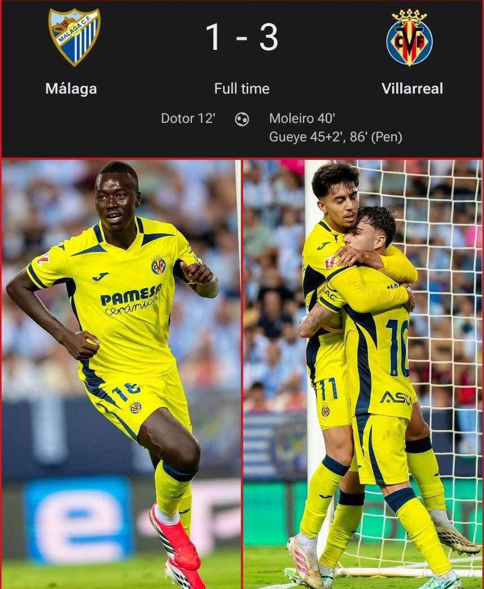
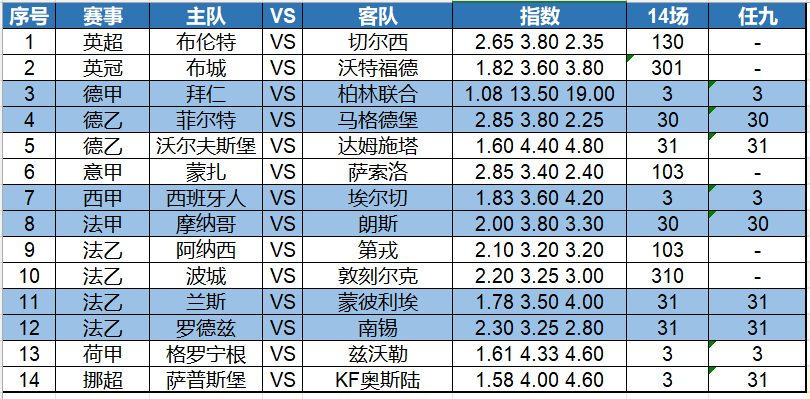

昨晚盘火3中3全红，竞火打出串关！今晚竞盘火线继续约，长跟长盈！


昨晚欧联杯，尤文主场5-0大胜荷兰的奈梅亨，取得开门红！替补上场的穆阿尼传射建功，将比分锁定为5-0。英联杯第3轮，替补出战的曼城5-0狂胜诺维奇，顺利晋级下一轮。小将F.桑巴梅开二度，阿兰传射建功。
西甲第6轮，比利亚终于赢球了，他们客场3-1力克之前同样不胜的马拉加。在多托尔为马拉加首开纪录后，莫莱罗为比利亚扳平比分；随后P·盖伊连入两球，帮助比利亚最终拿到本赛季第一场胜利。

另外的欧联杯，凯尔特人主场1-3不敌费伦茨瓦，爆出冷门，正合了宝哥赛前的判断。周末主场复仇流浪者才是凯尔特人本周的重点。
今天第一场关注德甲，拜仁主场迎战柏林联合。这场比赛，我们关注的不是比赛的胜负，是拜仁到底能赢几个？目前，指数多为三球/三球半的深盘，我认为连续两轮大比分输球的柏林联合，这次客场难逃惨败。
第二场关注西甲第7轮，西班牙人主场迎战埃尔切。西班牙人2胜1平3负，这个成绩符合他们的实力。埃尔切则是2平4负难求一胜。本场比赛，机构多为半球低水。之前两次同对阵交锋，西班牙人均主场战胜对手，这次也会全力争胜。
今晚14场和任九初步观点如下，祝好运——

14场：130、301、3、30、31、103、3、30、103、310、31、31、3、3
任九：-、-、3、30、31、-、3、30、-、-、31、31、3、31
欢迎大家收藏宝哥首页，请分享给好友或转发到朋友圈，让更多人看到我。
安卓用户可以下载APP，更便捷看到宝哥每天的动态！